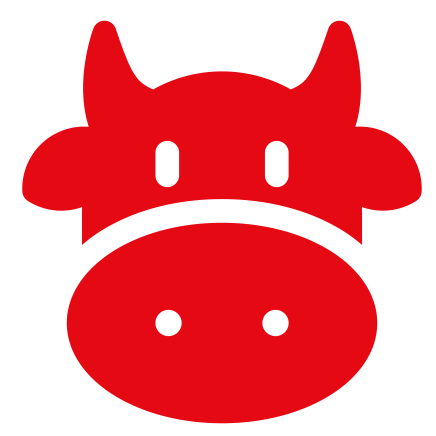

<nav class="navbar navbar-expand-lg fixed-top">
  <div class="container-fluid">

    <a class="navbar-brand" routerLink="">Cowmilk</a>
    <button class="navbar-toggler" type="button" data-bs-toggle="collapse" data-bs-target="#navbarNav" aria-controls="navbarNav" aria-expanded="false" aria-label="Toggle navigation">
      <span class="navbar-toggler-icon" style="filter: brightness(0) invert(1);"></span>
    </button>
    
    <div class="collapse navbar-collapse" id="navbarNav">
      <ul class="navbar-nav ms-auto">
        <li class="nav-item">
          <a class="nav-link active" aria-current="page" routerLink="">
            
          </a>
        </li>
        <li class="nav-item">
          <a class="nav-link" routerLink="search">
            
          </a>
        </li>
        
      </ul>
    </div>
  </div>
</nav>

<router-outlet></router-outlet>